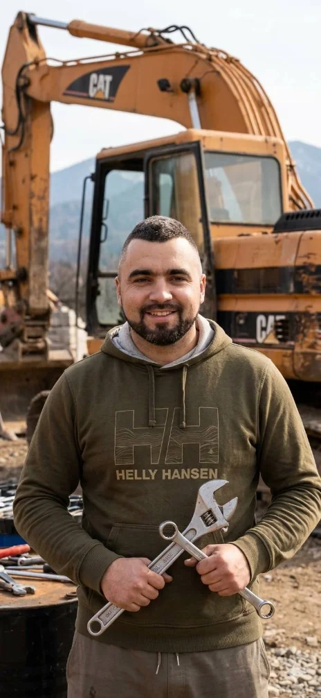

"
Władek znalazł usterkę, której dwa inne warsztaty nie były w stanie namierzyć. Zamiast wymieniać sterownik (jak proponował dealer), naprawił uszkodzoną wiązkę. Zapłaciłem 5 razy mniej.
MK
Niezależny serwis prowadzony osobiście przez Władysława Dąbrowę. Diagnostyka, naprawy mechaniczne i elektryka — uczciwie wycenione, terminowo wykonane. 18 lat doświadczenia z każdą marką.
Prowadzę warsztat sam — to znaczy, że samochód, który zostawiasz rano, wieczorem odbierasz z rąk tej samej osoby, która Ci go diagnozowała. Bez przekazywania, bez „zaraz oddzwonimy".

Pierwszy silnik rozebrałem mając 16 lat, w garażu ojca w Radzyminie. Od 18 lat naprawiam zawodowo — najpierw w dużym autoryzowanym serwisie VAG, potem przez 8 lat jako kierownik warsztatu wielomarkowego. W 2019 otworzyłem własny serwis na Pradze, żeby robić rzeczy po swojemu: uczciwie, bez podbijania cen i bez wciskania niepotrzebnych części.
Specjalizuję się w diagnostyce komputerowej — mam VCDS, Launch X-431 i Bosch KTS. Najczęściej trafiają do mnie samochody, których inne warsztaty „już sprawdzały". Najwięcej pracy mam przy silnikach benzynowych i Diesel TDI/CDI oraz mechatronice automatycznych skrzyń.
Nie obsługuję flot, nie podpisuję umów na lata z naprawiaczami szkód. Przyjmuję dziennie maksymalnie 4 auta — żeby każdemu poświęcić tyle uwagi, ile faktycznie potrzebuje.
Każda usługa zaczyna się od bezpłatnej rozmowy i diagnozy. Wycenę przedstawiam zanim cokolwiek odkręcę — nigdy nie ma „niespodzianek" przy odbiorze.
Pełne odczytanie sterowników, analiza danych live i mapowanie błędów. VCDS, Launch X-431, Bosch KTS.
Od wymiany rozrządu po pełną renowację — głowice, tłoki, łańcuchy, turbo. Diesel i benzyna.
Manualne i automatyczne (DSG, Tiptronic, ZF). Wymiana oleju, mechatroniki, kompletne renowacje.
Tarcze, klocki, przewody, płyn DOT, ABS. Hamulce ceramiczne w samochodach premium.
Diagnostyka geometrii, wymiana wahaczy, łączników, amortyzatorów. KW, Bilstein, Sachs.
Pełna obsługa okresowa — olej, filtry, świece, paski. Oleje Mobil 1, Castrol, Liqui Moly.
Naprawa instalacji, alternatorów, rozruszników. Programowanie sterowników i kluczyków.
Kompleksowe sprawdzenie auta przed kupnem — 60 punktów, raport PDF, jazda testowa.
Nie odpala, świeci kontrolka, hałas spod auta? Zadzwoń — najczęściej znajdę okno tego samego dnia.
Zdjęcia z bieżącej pracy — auta na podnośniku, narzędzia, drobne i większe naprawy. Przesuń strzałkami, żeby zobaczyć więcej.
Większość moich klientów wraca lub przyprowadza znajomych — to dla mnie najlepszy miernik dobrej roboty. Poniżej kilka świeższych opinii z Google i Facebooka.
Władek znalazł usterkę, której dwa inne warsztaty nie były w stanie namierzyć. Zamiast wymieniać sterownik (jak proponował dealer), naprawił uszkodzoną wiązkę. Zapłaciłem 5 razy mniej.
Mam Audi Q5 i wszędzie słyszałam, że to „samochód do ASO". Tu zrobili mi pełny remont DSG za połowę ceny i z 2-letnią gwarancją. Polecam każdej kobiecie — żadnego cwaniactwa.
Przyjechałem rano bez wcześniejszego umówienia, bo coś świeciło. Władysław obejrzał auto od ręki, wytłumaczył co jest, ile to kosztuje i kiedy może zrobić. Konkret i kultura.
Przegląd przedzakupowy uratował mnie przed bardzo drogim błędem — znalazł ślady spawu na nadwoziu, których nie widać gołym okiem. Raport dostałem mailem z dokumentacją. Warto każdą złotówkę.
Najuczciwszy mechanik w Warszawie. Powiedział wprost: „tego nie musisz teraz wymieniać, wytrzyma jeszcze rok". Kto dziś tak mówi? Wrócę za rok.
Oto pytania, które słyszę najczęściej. Jeśli nie znajdziesz odpowiedzi — po prostu napisz lub zadzwoń, chętnie odpowiem.
Najszybciej odpowiem przez WhatsApp lub telefonicznie w godzinach pracy.
+48 600 123 456Tak, zdecydowanie zalecam umówienie się — przyjmuję maksymalnie 4 auta dziennie, żeby każdemu poświęcić odpowiednio czasu. W nagłych przypadkach (auto nie odpala, świeci czerwona kontrolka) zadzwoń — prawie zawsze znajdę okno tego samego lub następnego dnia.
Wszystkie europejskie i japońskie marki. Najwięcej pracy mam z grupą VAG (VW, Audi, Skoda, Seat), BMW, Mercedes-Benz oraz Toyota i Honda. Auta amerykańskie (Ford, Chrysler, Jeep) — tak, ale daj znać wcześniej. Hybrydy i EV — diagnostykę i mechanikę tak, baterie wysokonapięciowe odsyłam do specjalisty.
Tak — 12 miesięcy na robociznę i części zamontowane przeze mnie (z wyłączeniem części eksploatacyjnych typu klocki, olej, paski po regulaminowym przebiegu). Na renowacje silników i skrzyń automatycznych — 24 miesiące. Wszystko mam zapisane na fakturze.
Tak, ale wtedy gwarancja obejmuje tylko robociznę. Polecam jednak zaufanie mojej selekcji — mam stałe rabaty u dostawców (Inter Cars, Auto Partner) i zwykle wychodzi taniej niż detal. Na życzenie pokażę faktury zakupu.
Oczywiście — jestem VAT-owcem (JDG). Faktury wystawiam standardowo dla firm i osób prywatnych. Akceptuję płatność BLIK, kartą, przelewem i gotówką.
Tak — warsztat jest zamykany, monitorowany i ubezpieczony. Większe naprawy zwykle wymagają 1-3 dni postoju. Jeśli potrzebujesz pojazdu zastępczego — mogę pomóc to zorganizować u zaprzyjaźnionej wypożyczalni.
Sam przeglądu badania technicznego (SKP) nie wykonuję — nie mam uprawnień diagnosty. Ale mogę zrobić pełny przegląd kontrolny przed wizytą na stacji i jeśli coś będzie do poprawki — naprawić tego samego dnia. Najbliższa SKP 200 metrów dalej.
Zadzwoń, napisz na WhatsApp albo wbij osobiście — najszybciej oddzwaniam w godzinach pracy. Większość spraw da się załatwić w ciągu jednego dnia.